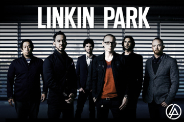

Linkin Park is an American rock band from Agoura Hills, California. The band's current lineup comprises vocalist/rhythm guitarist/keyboardist Mike Shinoda, lead guitarist Brad Delson, bassist Dave Farrell, DJ/turntablist Joe Hahn and drummer Rob Bourdon, all of whom are founding members. Vocalists Mark Wakefield and Chester Bennington are former members of the band. Categorized as alternative rock, Linkin Park's earlier music spanned a fusion of heavy metal and hip hop, while their later music features more electronica and pop elements.Formed in 1996, Linkin Park rose to international fame with their debut studio album, Hybrid Theory (2000), which became certified Diamond by the Recording Industry Association of America (RIAA). Released during the peak of the nu metal scene, the album's singles' heavy airplay on MTV led the singles "One Step Closer", "Crawling" and "In the End" all to chart highly on the US Mainstream Rock chart. The lattermost also crossed over to the nation's Billboard Hot 100.[1] Their second album, Meteora (2003), continued the band's success.The band explored experimental sounds on their third album, Minutes to Midnight (2007). By the end of the decade, Linkin Park was among the most successful and popular rock acts.
The band continued to explore a wider variation of musical types on their fourth album, A Thousand Suns (2010), layering their music with more electronic sounds. The band's fifth album, Living Things (2012), combined musical elements from all of their previous records. Their sixth album, The Hunting Party (2014), returned to a heavier rock sound, and their seventh album, One More Light (2017), was their first pop-oriented record. Linkin Park went on a hiatus when longtime lead vocalist Bennington committed suicide in July 2017. In April 2022, Shinoda revealed the band was neither working on new music nor planning on touring for the foreseeable future. Linkin Park is among the best-selling bands of the 21st century and the world's best-selling music artists, having sold over 100 million records worldwide. They have won two Grammy Awards, six American Music Awards, two Billboard Music Awards, four MTV Video Music Awards, 10 MTV Europe Music Awards and three World Music Awards. In 2003, MTV2 named Linkin Park the sixth-greatest band of the music video era and the third-best of the new millennium. Billboard ranked Linkin Park No. 19 on the Best Artists of the Decade list. In 2012, the band was voted as the greatest artist of the 2000s in a Bracket Madness poll on VH1. In 2014, the band was declared as "The Biggest Rock Band in the World Right Now" by Kerrang!.